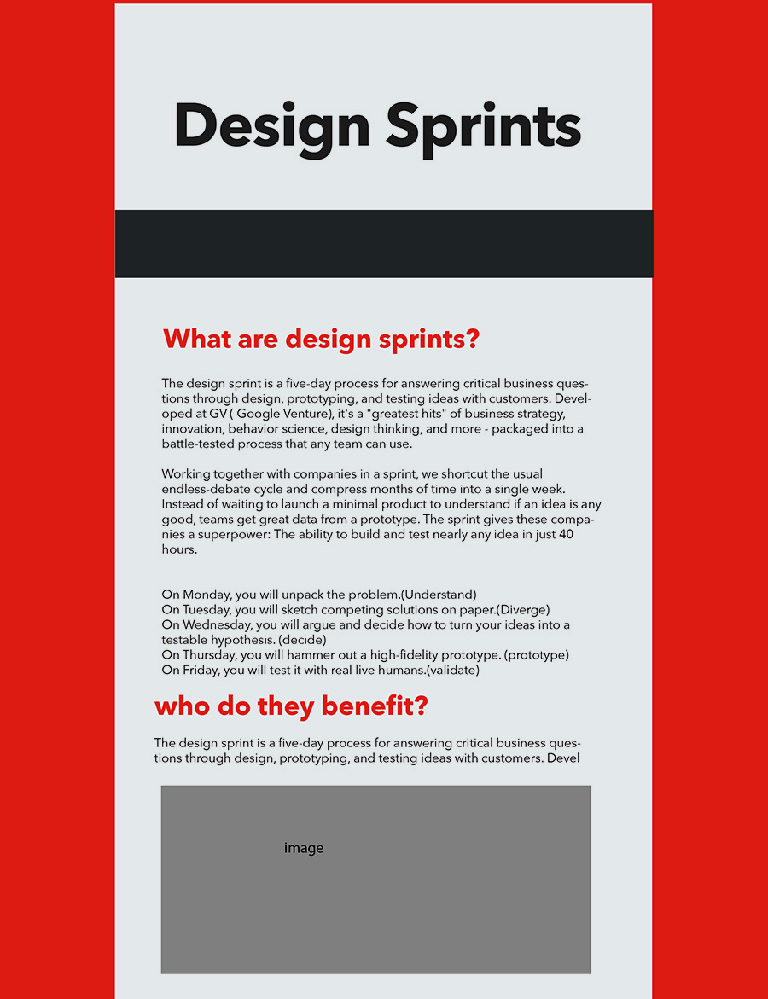
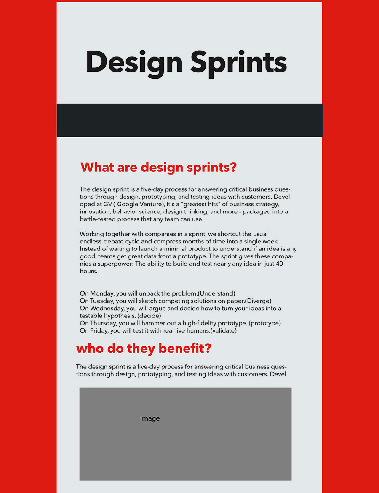

DESIGN SPRINT
What are design sprints?
Design sprints is a framework to help any size team or company to answer critical questions through design, prototyping, and testing ideas throughout one to five days workshop. The idea of design sprints was developed at IDEO and Stanford’s Design school, this method has been tried many times over years.
Who do they benefit?
“Design sprints” is beneficial to the company who wants to solve the problems efficiently.
How do they benefit?
There are six steps to process design sprints:
Prior the Sprint
- Finding 8 right participants based on different aspects of the company: design, marketing, business, technology, and expert users.
- Setting the actual schedule, making sure participants have enough time in next five days.
- finding a right place, and prepare enough equipment, like sticky notes, sharpies, voting dots stickers, paper, marker, pens, notebooks, whiteboard and so on.
-
Understand
At the beginning, making sure to clarify the challenge statement. Every participant has to write all the questions in the sticky notes, for instance, “How can we determine the user's preferences?” and “which content might users like to have?” This kind of questions motivate team to push the boundaries forward in terms of the user experience we want to achieve and finding new ways of technological solutions.
-
Diverge
After understanding the challenge statement, every participant will sketch competing solutions on paper. Many times, your first solution is the best solution, but not always. after define the problem, diverge is start. Everyone in the team can start throwing ideas by a great technique called “Crazy 8 in 5”: each individual sketches quick 8 potential UI solutions in 5 minutes. The benefits of this method is you could have many ideas within very short time period.
-
Decide
After diverge, each team member shared the idea on the whiteboard, and everyone need to vote a favorite solution. After voting,you will know the most popular solution. “Risk vs. Reward” is a scale when team choose one idea to prototype. It revealed what’s easy to do and important for user so the team could decide which one to prototype.
-
Prototype
With the final decision, team could test their ideas through prototype. Prototype is good to save valuable time and money. Using the prototype, team can try to predict the success and failure potential of the solution based on the testing user’s feedbacks. Like “Invision” is a good site to test the mobile applications.
-
Validate
Finally, you will test it with real live humans.
 
